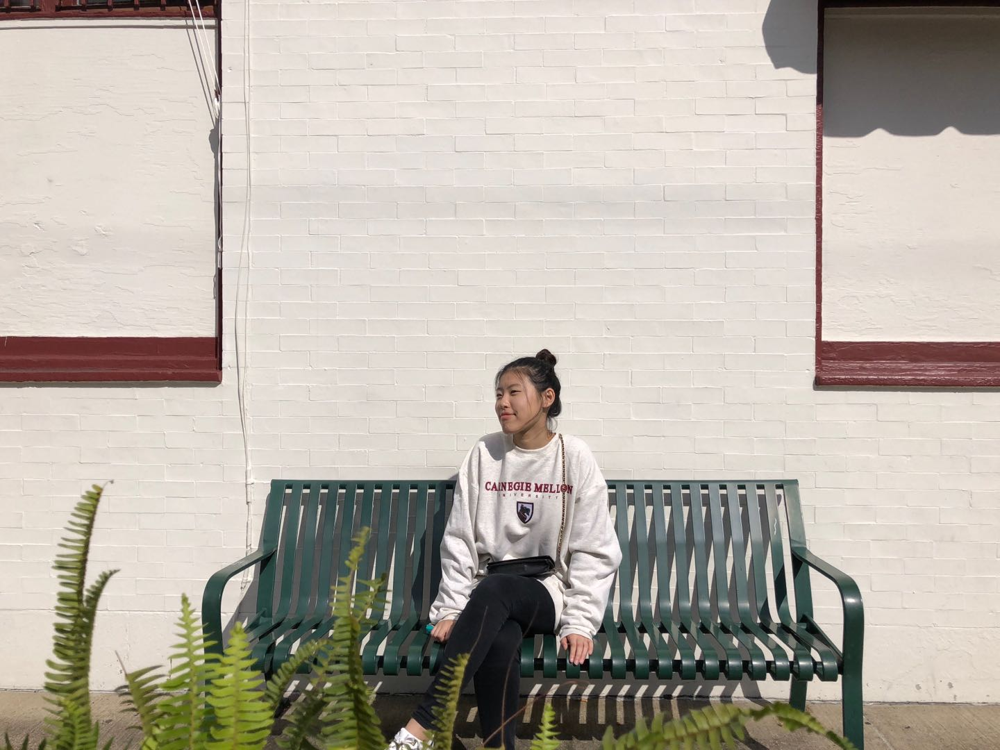

Home Page
Zoe Ding

Objective
Creative, highly visual fashion professional with more than 6 years experience and who can brilliantly mix and match the technical expertise and intuition like fabric and color seeks to become the latest Fashion Designer for La Vie En Rose in New York. I believe my skills and talents blend exquisitely with the innovative concepts La Vie En Rose is known for.
Education
College
Bachelor of Arts in Fashion Design
Savannah College of Art and Design
Atlanta, GA
2006-2010; GPA 3.7
High School
Mays High School
Atlanta, GA
2002-2006; GPA 3.54
Work Experience
Fashion Designer, 2015 to present
Stark Contrasts LLC, Atlanta, GA
Resposibilities
- Spearheads design team; creates and introduces new groundbreaking fashion designs and concepts with the intent of inspiring shock and awe.
- Oversees production of all merchandise and customized clothing lines including the Stark Contrast signature series.
- Works with the production team and Fashion Editor of several reputable publications such as Elle, Vogue, and Glamour during the fashion shoot.
- Company designated consultant and representative to clients, fashion and trendsetting publications.
- Manages company blog page.
- Presides over meetings with clients, events and fashion show organizers as well as established influencers in the industry.